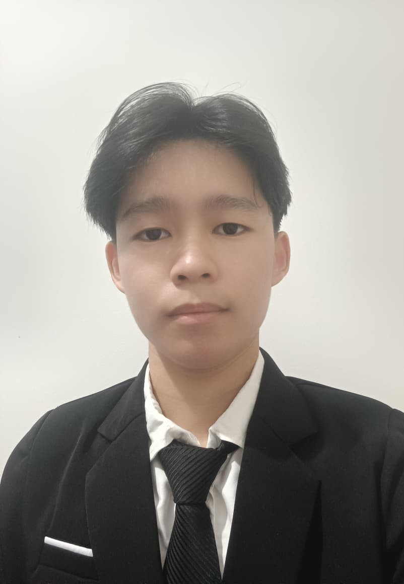

Christian Benizi Susilo
Program Studi: Teknik Informatika
Halo! Saya mahasiswa semester 3 dari Unviersitas Tarumanagara pada fakultas Teknologi Informasi prodi Teknik Informatika yang suka belajar pemrograman. Saya senang mencoba hal baru di dunia coding, terutama membuat tampilan halaman web, belajar bagaimana sebuah aplikasi bekerja, dan tertarik dengan logika pemrograman.
Keahlian dan Minat
- Web Developer (HTML, CSS, JavaScript)
- Python
- Design UI/UX
LinkedIn: linkedin.com/in/christian-benizi-susilo